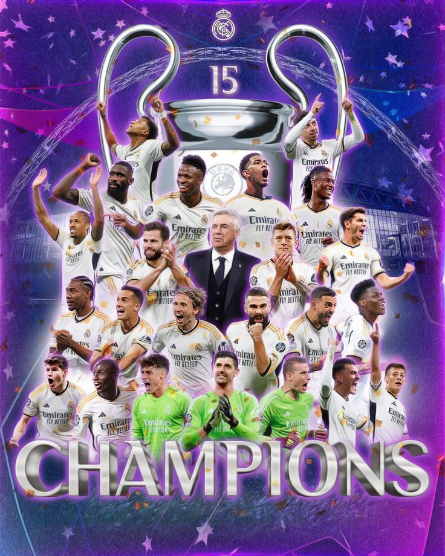

Madrid, 27 Oktober 2024 - Real Madrid kembali mencatatkan sejarah sebagai klub sepak bola dengan raihan terbanyak gelar Liga Champions Eropa, setelah berhasil memenangkan trofi ke-15 mereka dalam laga final yang penuh drama. Pertandingan yang digelar di Stadion Olimpico Roma itu menyaksikan Madrid mengalahkan lawannya dengan skor 3-1, mempertegas dominasi mereka di panggung Eropa. Gol kemenangan bagi Real Madrid dicetak oleh sang kapten, yang menunjukkan performa luar biasa sepanjang turnamen, dan dua gol tambahan yang menutup skor akhir. Dengan kemenangan ini, Real Madrid tidak hanya mempertahankan status mereka sebagai klub paling sukses di kompetisi tertinggi Eropa, tetapi juga mencatatkan rekor baru dalam sejarah sepak bola.
Pelatih Madrid, yang membawa klub ini ke kemenangan, menyampaikan kebanggaannya kepada para pemain. "Ini adalah hasil kerja keras tim, dedikasi tanpa henti, dan semangat yang tak pernah padam. Meraih gelar ke-15 adalah mimpi yang menjadi kenyataan," ujarnya. Di sisi lain, para pendukung Real Madrid merayakan kemenangan ini dengan penuh sukacita di kota Madrid. Jalanan ibukota Spanyol dipenuhi oleh ribuan pendukung yang mengenakan warna kebanggaan klub, sementara parade kemenangan besar diperkirakan akan digelar minggu depan untuk menyambut para pahlawan mereka.
Barcelona, 27 Oktober 2024 - Harapan Barcelona untuk meraih kemenangan dalam laga El Clasico melawan rival abadinya, Real Madrid, pupus setelah mengalami kekalahan dengan skor 1-3 di hadapan pendukung sendiri di Camp Nou. Pertandingan yang sangat dinantikan ini berakhir dengan kekecewaan bagi Blaugrana, sementara Los Blancos sukses membawa pulang kemenangan penting yang semakin mengukuhkan posisi mereka di puncak klasemen La Liga. Real Madrid membuka keunggulan dengan gol cepat pada babak pertama yang memanfaatkan kelengahan lini belakang Barcelona. Meski sempat mendapat perlawanan sengit dari tuan rumah, Madrid berhasil menambah keunggulan lewat serangan balik mematikan. Barcelona mencoba bangkit pada babak kedua, namun upaya mereka hanya menghasilkan satu gol hiburan. Gol penutup dari Real Madrid yang tercipta menjelang akhir pertandingan memastikan kemenangan bagi tim tamu.
